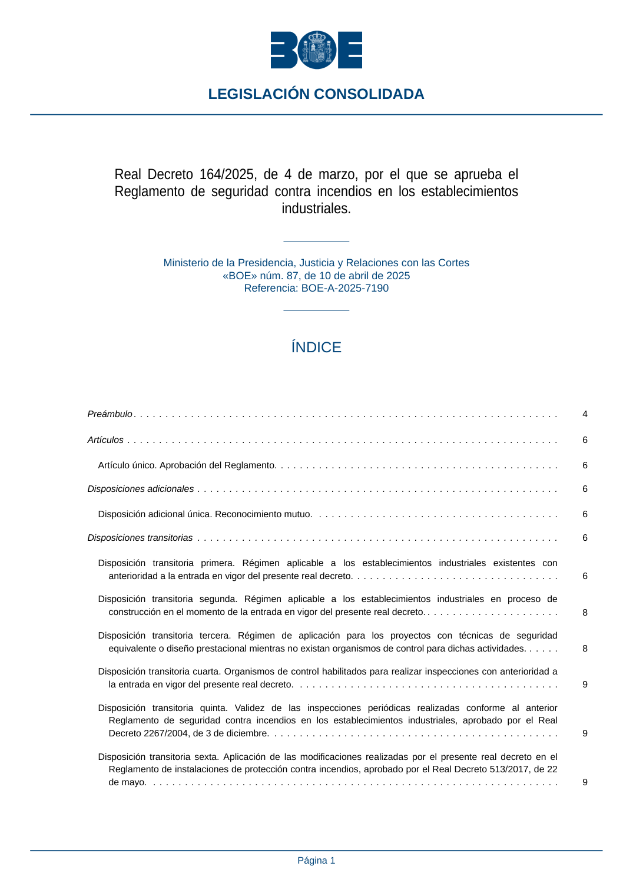

RSCIEI · Fragmento de PDF p1 · versión 2025-04-10 · capa asociada
Formatos: JSON compacto · Markdown · PDF fuente
Ámbito del documento · texto del ámbito · documento y tablas
ID técnico a0001 · PDF pág. 1 · jerarquía no validada por persona · no es capítulo: fragmento_portada · padre: raíz · literal original en el contenido: «Real Decreto 164/2025, de 4 de marzo, por el que se aprueba el Reglamento de seguridad contra incendios en los establecimientos industriales.»
Real Decreto 164/2025, de 4 de marzo, por el que se aprueba el Reglamento de seguridad contra incendios en los establecimientos Reglamento de seguridad contra incendios en los establecimientos

PDF fuente redistribuible: copia fiel enlazada en esta página (SHA256 verificado).